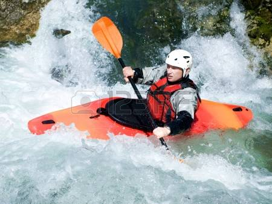

Extreme sports are recreational activities perceived as involving a high degree of risk. These activities often involve speed, height, a high level of physical exertion, and highly specialized gear.
The definition of an extreme sport is not exact and the origin of the term is unclear, but it gained popularity in the 1990s when it was picked up by marketing companies to promote the X Games and when the Extreme Sports Channel and Extreme.com launched. More recently, the commonly used definition from research is "a competitive (comparison or self-evaluative) activity within which the participant is subjected to natural or unusual physical and mental challenges such as speed, height, depth or natural forces and where fast and accurate cognitive perceptual processing may be required for a successful outcome" by Dr. Rhonda Cohen (2012).
Kayaking

Kayaking on the river
In Fifty Places to Paddle Before You Die, the newest addition to the Fifty Places series, Chris Santella explores the best destinations for the diverse sport of paddling. The book features the world’s top spots for kayaking, rafting, canoeing, and stand-up paddleboarding. Destinations include the Grand Canyon, Alaska’s Kenai Peninsula, Baja California, Indonesia’s Komodo Islands, and the Antarctic Peninsula, as recommended by paddling experts. Compelling travelogues are complemented by beautiful and vibrant photographs of the locations and travel tips to help readers experience the destinations for themselves.
Bungee Jumping
Jump to space
Bungee jumping is scary the first time because you have no idea what to expect. It’s more the fear of the unknown. But anyone who’s bungee jumped a few times knows that on your 3rd, 4th or 5th time fear isn’t a factor.According to LiveScience “if the brain knows there is no risk of really being harmed, it experiences this adrenaline rush as enjoyable”.There’s always a little niggle of “what if something goes wrong” but that is quickly dispelled by rational thinking, the guide’s rigorous safety checks and the thought of “this is going to be awesome”.So if the adrenaline-junkie’s kick is no longer fuelled by fear, what’s next?
Parachute
Flying as a bird
Skydiving is an activity that's almost synonymous with bucket lists. But before you enter the wonderful world of skydiving, understand that jumping out of a perfectly good airplane doesn’t have to be a once-in-a-lifetime thrill. “People think that with skydiving, you just go do one jump,” says Nancy Koreen, director of sport promotion at the United States Parachute Association. “They don’t realize that it’s a whole sport that people do every week as a hobby and a lifestyle.” The number of annual skydives in America has been growing steadily since 2007, with an estimated 4.2 million jumps last year alone. Advanced jumpers can even compete in all sorts of skydiving competitions. But let’s not get ahead of ourselves.
Extreme Skiing
Action Storm
Extreme skiing is skiing on remote slopes outside the established sites, it’s being the first to ski the fresh snow. The slopes are above 45° bank and can go even above 60° (100% – 170% when 100% is a 45° bank slope).
Extreme skiing started around the 70′s. There were several successful attempts in the 60′s to go down on slops that were considered impossible up until then. But it was only in the 80′s that this extreme sport became a separate branch of classic skiing.The term “Extreme skiing” is often being confused with regular skiing which indeed happens to become extreme from time to time. For example, skiing fast and aggressively on a black diamond trail is undoubtedly an extreme sport, but it is not Extreme skiing.
Extreme skiing can be done on skis or on snowboard. Here we will talk mostly about the skis, because it is the more common and because the speeds on skis are higher than on snowboard.